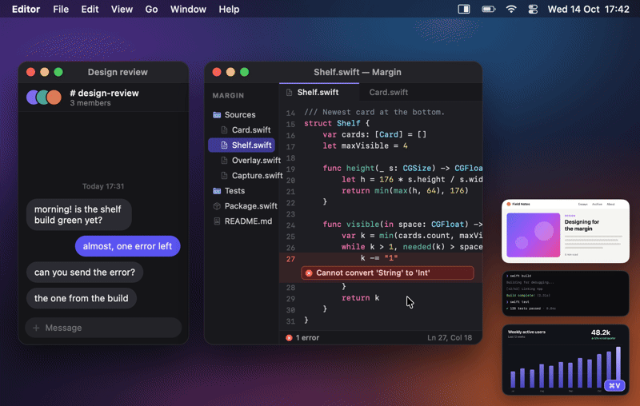
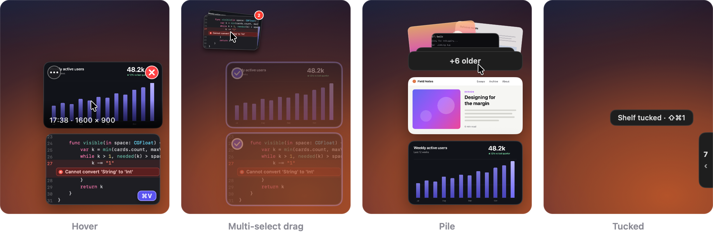
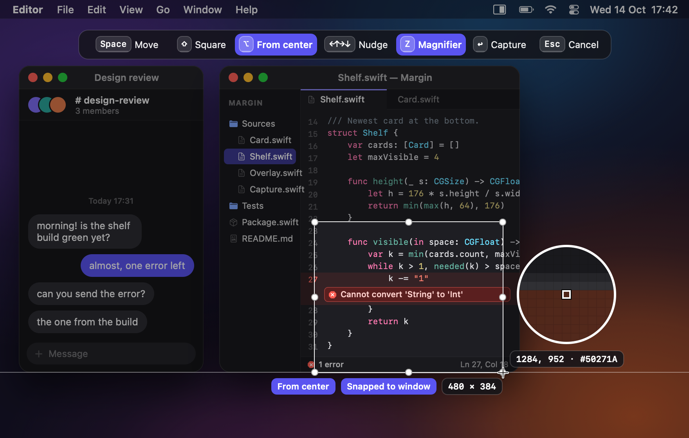
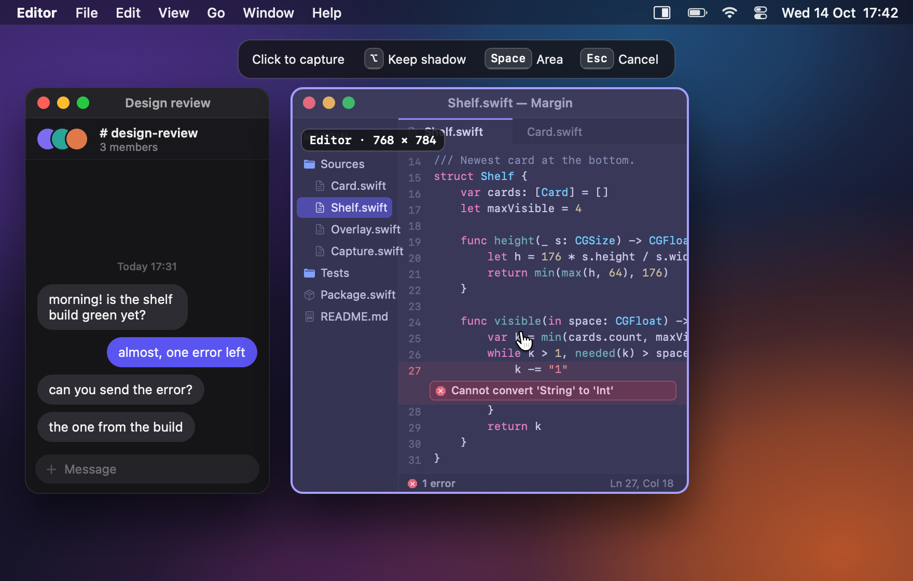
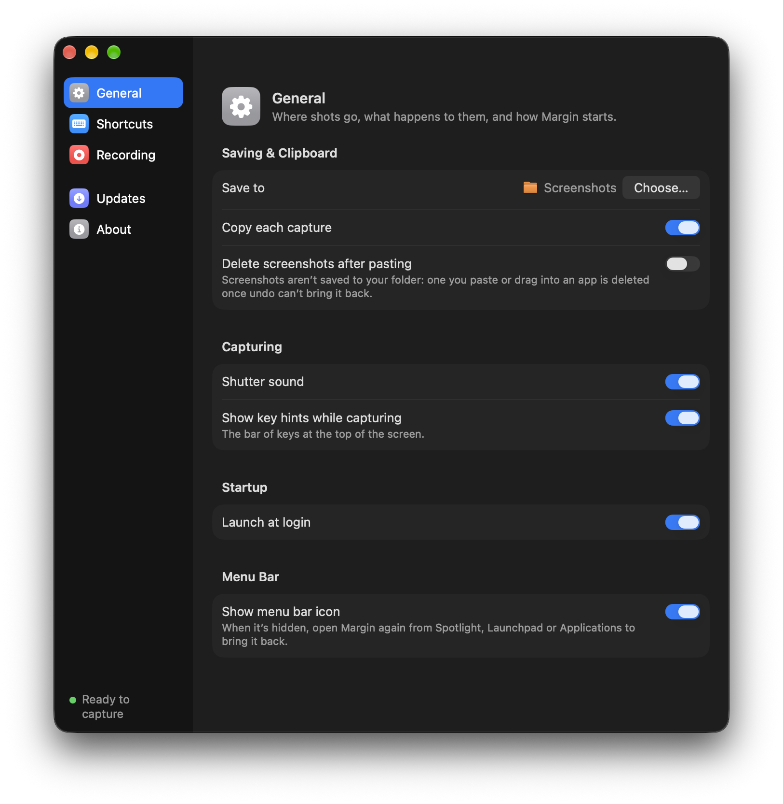

⌘V works in your terminal.
The clipboard holds the image and its file, so Ghostty pastes the path and Claude Code attaches the shot.
Every shot is saved, copied and kept at the edge of your screen until you drag it where it belongs.
$ curl -fsSL https://jenish-shobhit.github.io/margin/install.sh | bash

That's the whole job. No preview to dismiss, no save dialog, no editor in the way.
At once, so the menu or tooltip you're after can't close on you.
Letting go is the capture. There's no button to confirm.
In ~/Desktop/Screenshots, on the clipboard and on the shelf, in under a tenth of a second.
Shots stack at the right edge of your screen and stay there, even after a restart, until you put them to use.

Into Finder, Slack, Chrome or Terminal. The card leaves the shelf once the drop lands.
Press Space to look closer, or double-click to open. ⇧⌘1 tucks the shelf away.
⌘Z brings back the last 20 removals, even files you put in the Trash.

Most shots are a quick drag. For the rest, everything you need is on the overlay before you let go.

Press Space and click a window. You get just that window, with transparent rounded corners and nothing behind it.
The clipboard holds the image and its file, so Ghostty pastes the path and Claude Code attaches the shot.
⇧⌘5 records an area, a window or a display as a Retina MP4 at up to 60 fps, with sound if you want it.

Written in Swift for macOS 26. It lives in the menu bar, with no Dock icon, no account and no third-party code.
The shelf, the overlay and the fly-in are left out of every capture and recording.
One click clears every card. The files stay in your folder.
Turn on Delete screenshots after pasting, and a shot goes once it's done its job.
Rename or move a shot in Finder and its card keeps up.
Over full-screen apps too, and it never takes focus from the app you're in.
Tagged as a screenshot, so Finder and Spotlight find it, with its colour profile kept.
Margin takes over the macOS screenshot keys, with your permission. Change any of them in Settings.
Every shot is already copied, so the ⌃ versions do the same. The full list covers the keys for selecting and for the shelf.
Margin works entirely on your Mac. Your shots never leave it unless you drag them somewhere.
A daily check for a new version, and the download if you choose to install it. Nothing about you is sent. Turn it off in Settings.
Screen Recording, and the microphone only if you record it. No Accessibility or Input Monitoring.
MIT licensed, with every line on GitHub.
~/Desktop/Screenshots. Pick another folder in Settings if you like.Free, for macOS 26 or later on Apple silicon, from an account that can install apps.
It downloads the latest release from GitHub, checks its size and checksum against GitHub's and its signing certificate against Margin's, copies it to Applications and opens it. If a check fails, nothing is installed.
$ curl -fsSL https://jenish-shobhit.github.io/margin/install.sh | bash
No sudo and no Open Anyway step; Margin then asks for Screen Recording itself. Read the script first if you like: install.sh.
Margin isn't notarized by Apple yet, so a downloaded copy's first launch takes one extra step, once.
A zip with Margin.app inside.
Already have Margin? Update Margin, or choose Check for Updates… in its menu. Updates need no Open Anyway.